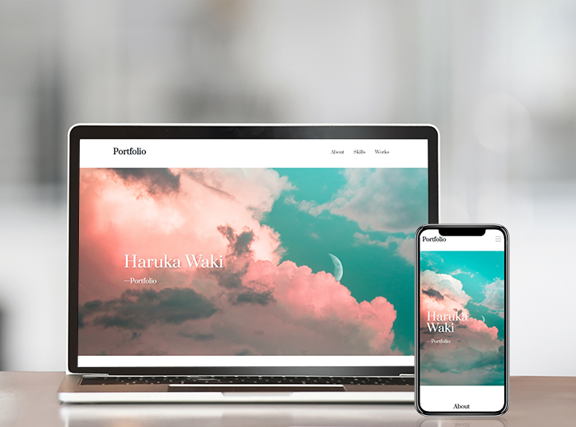

About

Haruka Waki
Address: Kyoto, Japan
Hobby : Watching movies and dramas on Netflix/Working out at home/Traveling abroad
Hi, I'm Haruka Waki.
After graduating from university, I worked for a life insurance company in an agency sales position for 3 years. After that I work for a software company to improve UI and create e-mail newsletters to run webinars.
By doing these job, I have learned that the design and usability of a website can make a difference in the number of views.
I became interested in UI and web design, so I started studying to get design and creative thinking skills.
― Strength ―
Logical Thinking
I can make inferences from data and reflect them in web design.
Detail Oriented
I am good at detailed work quickly.
So I can care about small-details of design.
Flexibility
I work in a team on everyday. So I can take in the opinions of others and brush up designs.
Works
― UI Improvements ―
-

Webinar Application Form
※ This is a recreation of a real my job.
― Creating Websites ―
-

Hotel website
-

Gym website
-

Cooking Recipe website
-

Bakery website
-

HR Company website
-

My Portfolio website
※ These were all created for learning purposes.